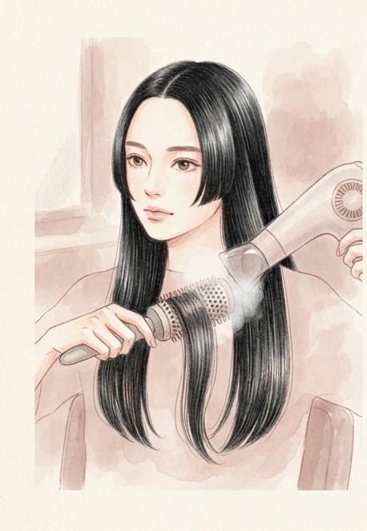
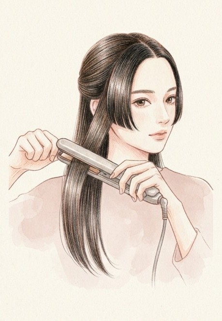
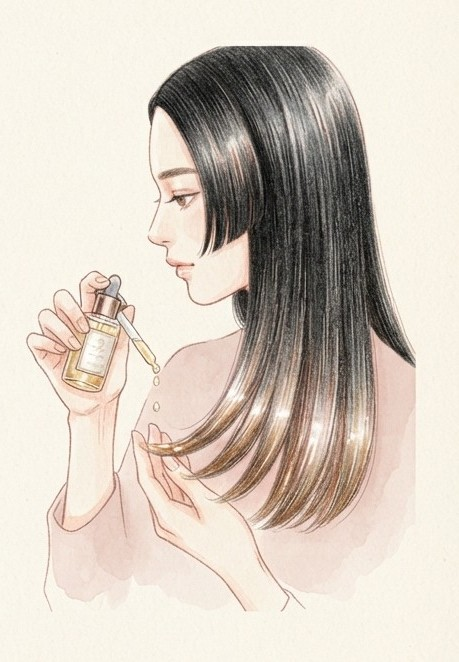
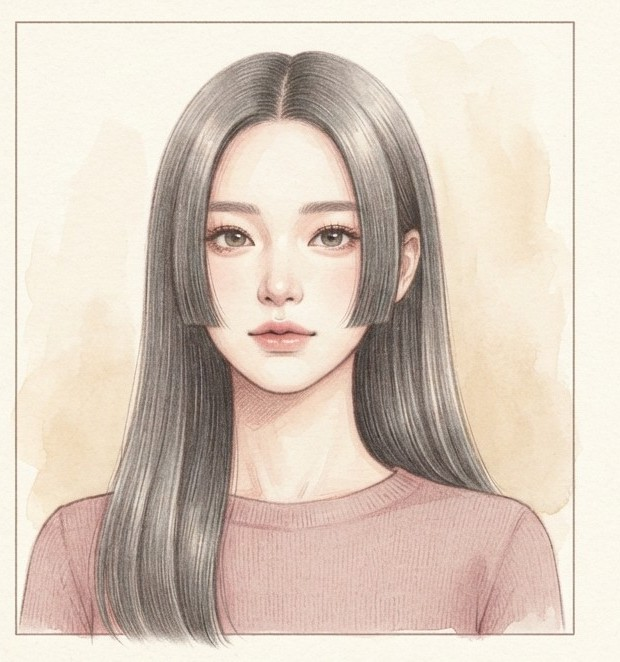
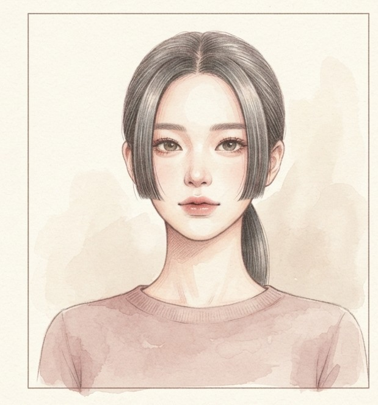

파리에서 유행 중인
한국식 히메 커트

볼~턱 라인에서 싹둑
반듯한 옆머리가 얼굴을 감싸는
히메 커트
원래는 일본 전통 머리인데, 프랑스 보그는 K-팝 가수들의 대표 스타일이라고 소개했어요. 헝클어진 파리지앵 헤어 다음은 이거래요.
이런 얼굴이면
더 잘 어울려요

달걀형긴 얼굴살짝 각진 얼굴
옆머리가 얼굴 여백을 가려서 이목구비가 또렷해 보여요. 둥근 얼굴이면 옆머리 길이만 조절하면 돼요.
집에서는
이렇게만 해 주세요

하나.
둥근 빗 + 드라이어로
차분하게 빗어 내리기

둘.
바쁠 땐
옆머리만 판 고데기

셋.
끝에 헤어 오일 살짝
윤기 마무리

풀면
묶으면풀면 긴 생머리 묶으면 단발처럼
하나로 묶으면 짧은 옆머리만 남아서 단발 같은 분위기가 나요.
BEAUTY letter
P.S.
에디터의 한 줄 팁
히메 커트는 몇 mm 차이로도 균형이 달라져요.
집에서 혼자 자르지 말고 꼭 미용실에서 다듬으세요.
다음 레터에서
만나요
저장해두고 쇼핑할 때 꺼내보세요
@from.beautyletter 팔로우
참고: 보그 코리아 (2026.09.17)